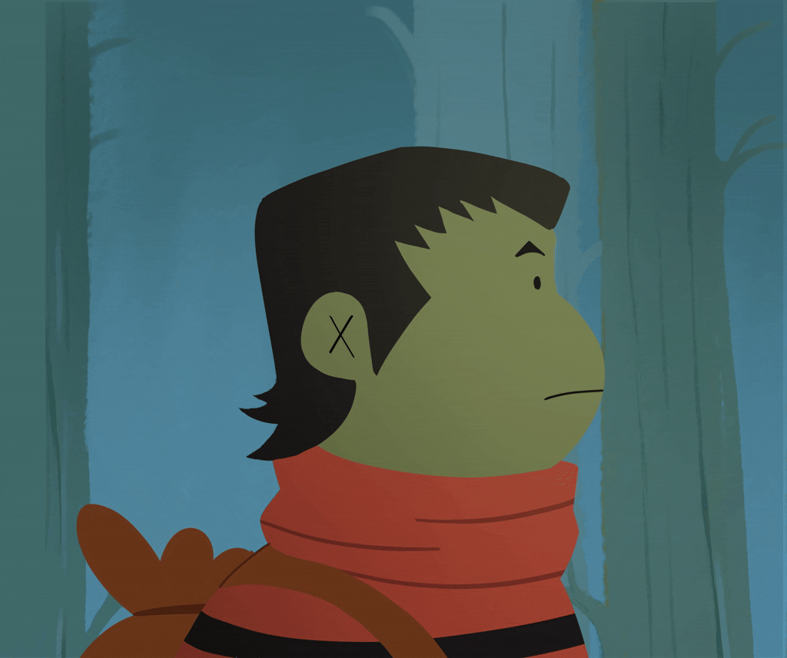
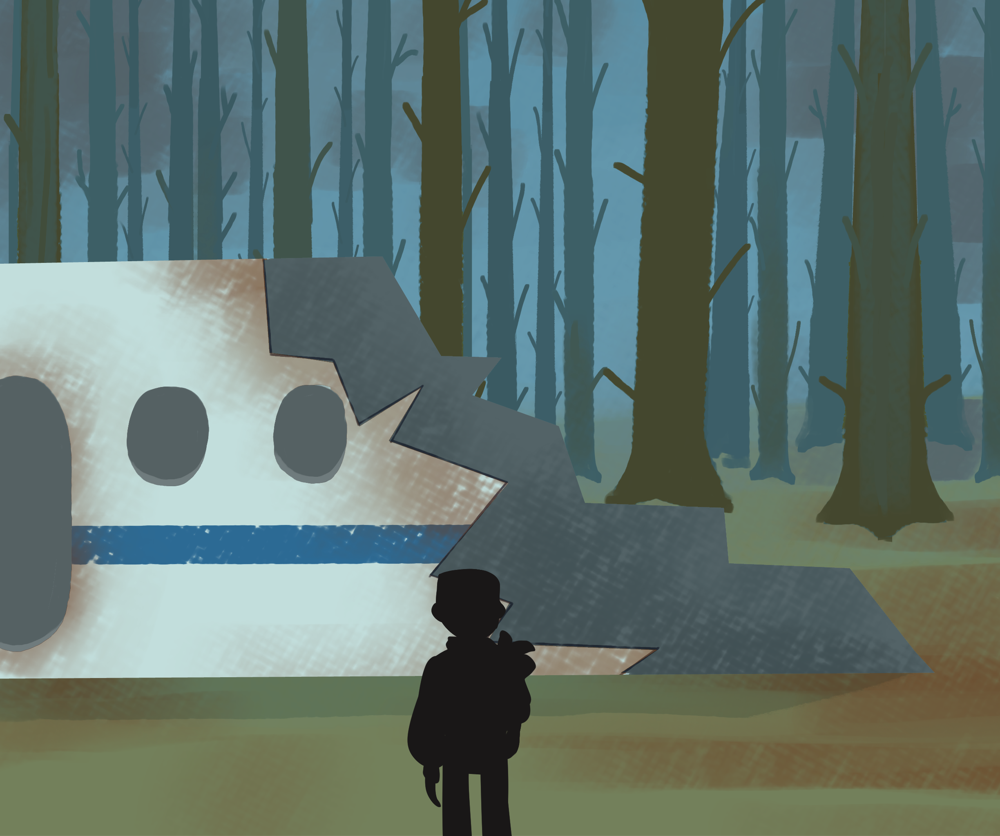
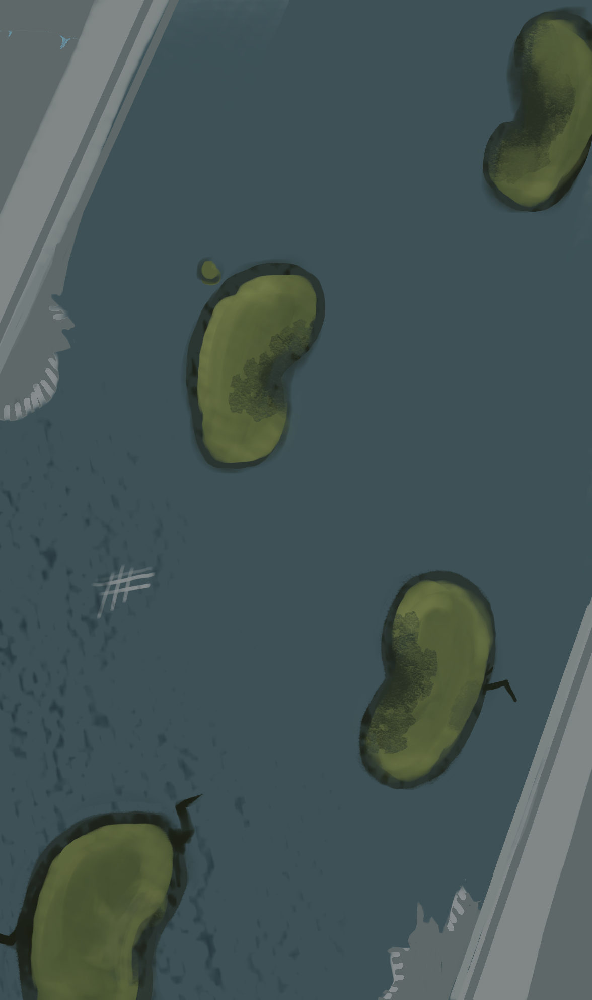
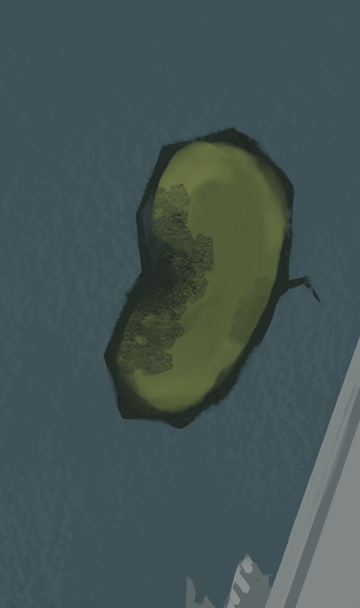
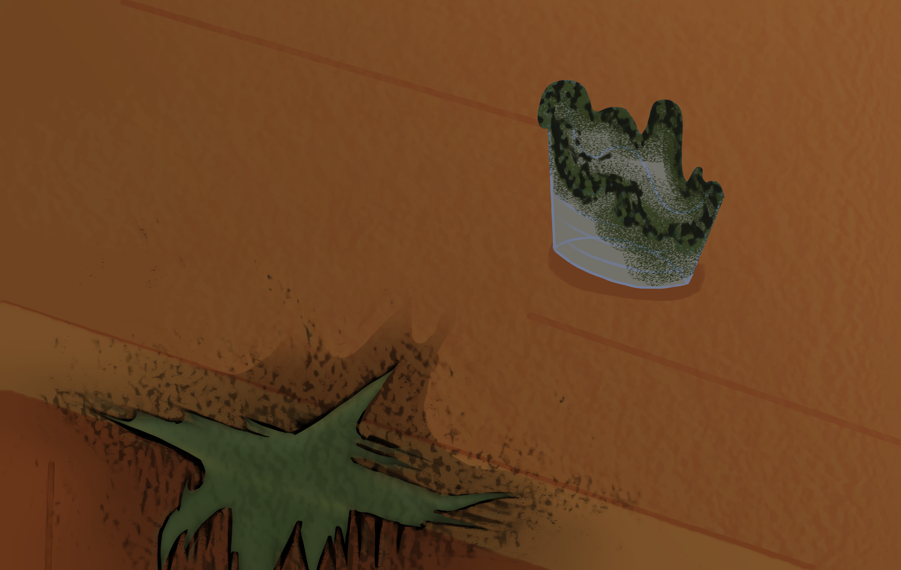
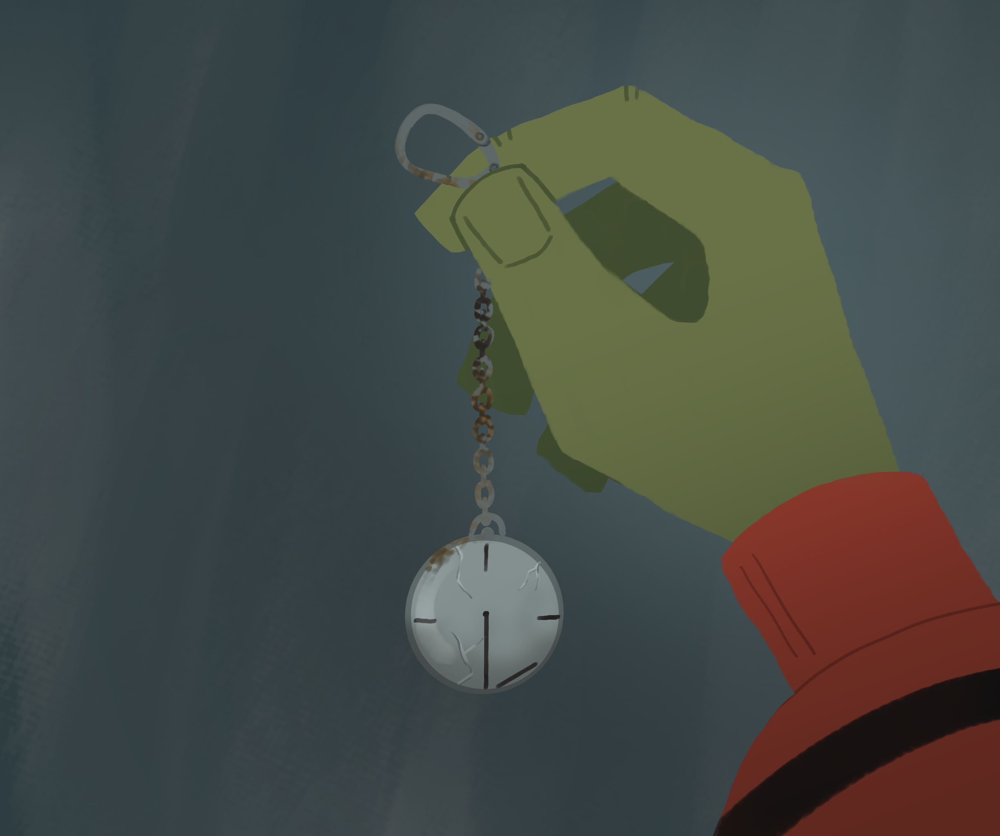
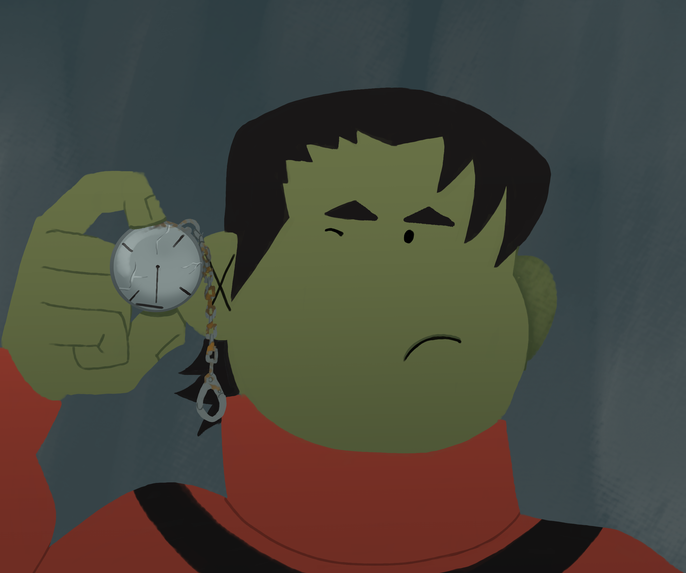

DEAR DIARY

Dear diary... I hope i'm doing this right. This is how people used
to hide their secrets, no? In a book that anyone could just
stumble upon and open. Yeah.. weird traditions humans used have i
guess.
Anyways, if you're reading this i guess that's
exactly what happened. You picked up this book from whatever chest
i hid it in. Which is saying something due to my special ability
to hide things in unexpected places. So i guess you're like an
actual profesional searcher or historian or something.
And that is actually good news!
Who is this?

Means i'm dead :p
Personally, i have nothing to hide. I just
find it kinda cool that someone will read about me when im dead.
So thanks for finding this! In the rare case i'm not dead... STOP
READING RIGHT NOW!
Respect this private diary!

Who am i? My name is Ernie. I lived here in Woogort. It was already rotting when i was born but the elders speak of a time where supposedly everything was alive and growing...

I don't know if i believe that. The elders can be quite...
imaginative.
Anyways, this is about me, not about the crazy old ones.
<<< Dear diary
Rotting?

Pretty much everyone i care about is dead or ill. It is too easy to
catch The Rot and die so... that may be what happened to me!
So future historians, here's your answer: Ernie died of The
Rot. Like everyone else.
But i'm not dead yet. Not at the time
im writing this (obviously...) So while i haven't died, I like to
walk around and find valuable objects.


But it has to be glass or metal. Any other material is susceptible to The Rot. Really makes you think why did old people make everything out of plastic...

Today i'm gonna tell you the story of how i almost died. Because i need to justify using my wish... The elder told me to save them for special occasions and once scolded me for using it to get more Reflo... yeah that maybe wasn't an extenuating circumstance... but what can i say, you would have done it too!
<<< Who is this?
Wait, that's too much to unpack...

Anyways... the day i almost died. I was just out and about, minding my own business. I remember i found a cool clock, but it was broken. Lucky for me i love repairing stuff. So i just looked around for any spare parts, maybe an old tech battery...

<<< Rotting?